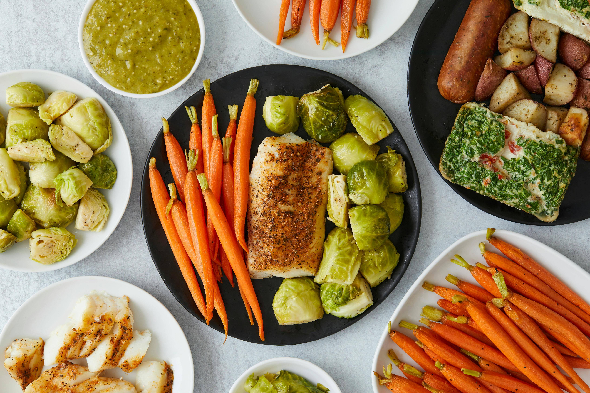

Balanced Diet

A balanced diet includes protein, carbs, fats, vitamins and minerals. Whole foods improve energy and recovery. Eating properly supports muscle growth, improves focus, and helps maintain a healthy lifestyle. Over time, good nutrition reduces the risk of disease and improves overall well-being.